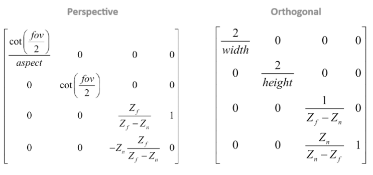

→ Source code: matrix.js.
A matrix is a 2D grid of numbers (2x2 to 4x4) representing a transformation.
They can be combined or applied to vectors using multiplication.
Our library will represent matrices with DOMMatrix.
m = new DOMMatrix([
m11, m12, m13, m14,
m21, m22, m23, m24,
m31, m32, m33, m34,
m41, m42, m43, m44
]);
Transposing a matrix inverts its horizontal and vertical axis.
[A B C [A D G
M = D E F MT = B E H
G H I] C F I]
It's not present in DOMMatrix, and usually doesn't need to be implemented.
Matrices multiplication is not commutative (applied from right to left).
It is equal to a system of linear equations.
The product of two matrices represents the product of each column of the first one with each line of the second one.
mn = m.multiply(n);
The identity matrix doesn't change the element multiplied by it.
m = new DOMMatrix();
These operations are used to determine the inverse of a matrix and don't need to be detailed here.
Multiplying a matrix m by its inverse m-1 gives the identity matrix.
Not every matrix has an inverse.
mi = m.inverse();
Row major or column major consists in choosing conceptually how the rotation and translation are stored in a 4x4 matrix, horizontally or vertically.
The book chooses row major, but most WebGL uses column major, so we will use the latter from now on.
The rows and column majors matrices are the transposed of each other.
A 4x4 matrix in column major contains rotation information on its top-left 3x3 submatrix, translation information on the right column and scale information on the diagonal.
Translation describes how an object moves on each axis. It is stored in m14, m24 and m34.
t = m.translate(x, y, z);
Scaling represents the object's scale on each axis. It is stored in m11, m22 and m33, but these components are shared with rotation.
s = m.scale(x, y, z); // scale around the origin
s = m.scale(x, y, z, ox, oy, oz); // scale around the point o
Euler rotations consist in applying rotations sequentially:
- Pitch (rotation around the X axis)
- Yaw (rotation around the Y axis)
- Roll (rotation around the Z axis)
r = m.rotate(x, y, z);
Gimbal lock happens when two axis get merged (ex: pitch at 90° then yaw at 90°), and can be solved by using Axis-angle or Quaternion rotations instead.
A 3x3 matrix (or submatrix) represents rotations, encoded in the following way:
Warning: in DOMMatrix methods, angles are given in degrees, not radians.
Instead of describing a rotation around X, Y and Z axis, it is defined as an unique rotation around a custom, oriented axis.
r = m.rotateAxisAngle(x, y, z, angle);
Matrices are useful to apply transformation to vectors, with a multiplication.
Multiplying a 4x4 matrix with a vector highlights the importance of the w component:
- With directions, w = 0, so these vectors are immune to translations whrn multiplied with the 4th column of the matrix.
- With points, w = 1 (or any value different than 0), so these vectors can be translated.
t = m.transformPoint(v);
In games, matrices usually perform scale first, rotate second and translate last.
To render 3D scenes on a 2D screen, vertices (3D points) get transformed to appear correctly in the field of view.
- World transform computes the local point coordinates in world coordinates
- View transform puts it in eye space (or view space or camera space)
- Projection puts it into normalized device coordinates.
Projection can be in perspective or orthographic.

Where:
- fov: field of view angle (usually 60° or π/3 rad)
- width, height: canvas size
- aspect: canvas aspect ratio (width/height)
- Zf, Zn: far and near clipping planes
- cot = 1 / tan.